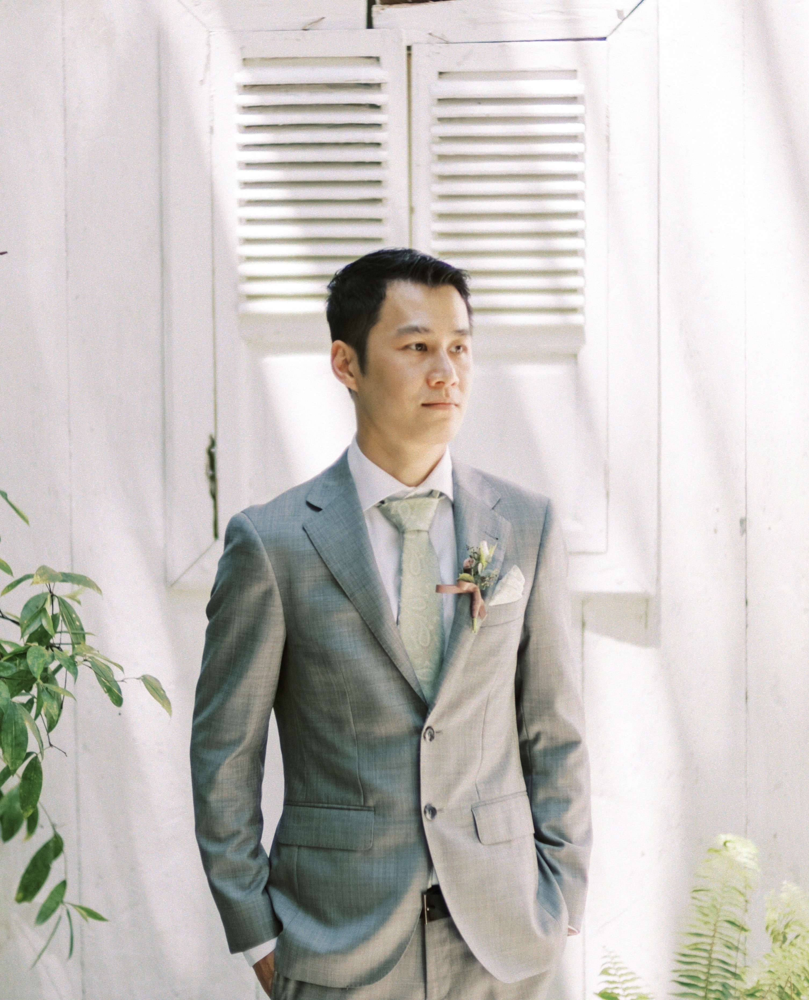

Personal Info
- 📍 Arncliffe, NSW
- 📧 yudhi_lee@hotmail.com
- 🛎 (+61) 481-160-555
- 🇦🇺 Australian
- 🇮🇩 Indonesian
Education
University of Technology Sydney, NSW
Bootcamp of Software EngineeringTAFE NSW - St. Leonards
Diploma of Information TechnologySWSi TAFE - Padstow
Cert. III of PatisserieTAFE NSW - Ultimo
Cert. IV of Commercial CookerySydney Business and Travel Academy
Advanced Diploma of Hospitality ManagementKey Skills
- JavaScript
- Bootstrap
- React
- Mac & Windows
- SQL
- MongoDB
- WordPress
- Canva
- Oracle
Career
Freelancer Website Developer at Crielle
Tools: WordPress, Figma
November 2022 - Present
- Worked casually as a website developer, delivering custom websites using WordPress for small businesses and personal brands.
- Designed layout mockups and visual assets using Canva, aligning designs with client branding.
- Managed content updates, plugin integrations, and ensured SEO-friendly structure.
- Communicated directly with stakeholders to gather requirements and provide support.
Project
Bootcamp Project - Software Engineering at UTS
Technologies: React, Bootstrap, JSX, REST API, Node.js
February 2025 - July 2025
- Developed a full-stack responsive web application as part of a team project during the Software Engineering bootcamp at the University of Technology Sydney (UTS).
- Built dynamic user interfaces using React and Bootstrap, writing clean and modular JSX components.
- Integrated RESTful APIs to handle backend logic and data storage, enabling seamless interaction between frontend and backend.
- Implemented CRUD operations to manage user-submitted data, ensuring smooth data flow and persistence.
- Practiced agile methodologies, version control with GitHub, and collaborative coding in a real-world development environment.
Experience
Responsible for roasting green coffee beans to achieve consistent flavor profiles, maintaining roasting equipment, ensuring quality control, and assisting with production needs.
Supervised baristas, monitored activities, and mentored them. Developed customized training programs for each barista. Trained new team members positively and encouragedly. Assessed applicants’ knowledge, skills, experience, and aptitudes through interviews. Managed department operations efficiently.
Responsible for ensuring the quality of coffee offered in-store, including training, interviewing, maintaining operations, stocking, rostering, and resolving workplace issues. Prioritised providing a positive customer experience.
Trained new employees on beverage preparation, and customer service. Learned menu items and drinks to meet customer needs. Provided expert guidance on coffee selection, grinding, brewing, and equipment usage. Developed a loyal customer base by fostering strong relationships and delivering high-quality beverages.
References
Cristhoper Lin
Co-Founder of Crielle
- Phone: +61 410 354 822
- Email: info@crielle.com.au